정보통신기사(구) (2020-09-26 기출문제)
1과목: 디지털 전자회로
1. 직류 출력전압이 무부하일 때 250[V]이고 부하일 때 220[V]이다 이때 정류회로의 전압변동률은?
- 12.6[%]
- 13.6[%]
- 25.2[%]
- 27.2[%]
(정답률: 71%)

2. 다음과 같은 정류회로에 사용된 다이오드의 최대 역전압(PIV)는 10[V]이다. 100[V], 60[Hz]의 피크 정현파가 입력될 때, 정상적인 회로 동작을 보장하기 위한 최대 권선비는? (여기서, n은 1차측 권선비이고 m은 2차측 권선비이다.)
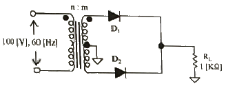
- 10 : 1
- 1 : 10
- 1 : 20
- 20 : 1
(정답률: 67%)
3. 재너 다이오드의 항복전압이 10[V], 내부저항이 8.5[Ω]이다. 제너전류가 20[mA]일 때 부하전압은 얼마인가?
- 10.11[V]
- 10.13[V]
- 10.15[V]
- 10.17[V]
(정답률: 59%)
4. 다음 중 증폭기에 대한 설명으로 옳은 것은?
- 교류성분을 직류성분으로 변환하기 위한 전기회로다.
- 다이오드를 사용하여 교류 전압원의 (+) 또는 (-)의 반사이클을 정류하고, 부하에 직류 전압을 흘리도록 한다.
- 교류(AC)를 직류(DC)fh 바꾸는 여러 과정 가운데 맥류를 완전한 직류로 바꾸어 준다.
- 입력의 신호변화 형상이 출력단에 확대되어 복사된다.
(정답률: 76%)
5. 다음 중 부궤환 증폭회로의 특징이 아닌 것은?
- 이득 증가
- 비직선 일그러짐 감소
- 잡음 감소
- 안정도 향상
(정답률: 64%)
6. 다음 증폭기에 대한 설명으로 틀린 것은?
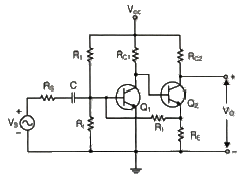
- 병렬전류부궤환 회로이다.
- 입력임피더스는 감소하며 출력임피던스는 증가한다.
- 궤환율(β)는
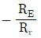
이다. - RE, Rr, RS, RC1이 안정화 되면 TR의 파라미터 변화와 관계없이 안정한 출력이 나온다.
(정답률: 59%)
7. 다음 중 이상적인 연산증폭기의 특성이 아닌 것은?
- 전압증폭도가 무한대
- 입력 임피더스가 무한대
- 출력 임피던스가 무한대
- 주파수 대역폭이 무한대
(정답률: 58%)
8. 증폭기와 정궤환 회로를 이용한 발진회로에서 증폭기의 이득을 A, 궤환율을 β라고 할 때, βA>1이면 출력되는 파형은 어떤 현상이 발생하는가?
- 출력되는 파형의 진동이 서서히 사라진다.
- 출력되는 파형은 진폭에 클리핑이 일어난다.
- 지속적으로 안정적인 파형이 발생한다.
- 출력되는 파형은 서서히 진폭이 작아진다.
(정답률: 75%)
9. 다음 중 온도 특성이 좋고, 전원이나 부하의 변동에 대하여 비교적 안정도가 좋기 때문에 안정한 주파수의 발생원으로 많이 쓰이는 발진회로는?
- 빈 브리지형 발진회로
- 수정 발진회로
- RC 발진회로
- 이상형 발진회로
(정답률: 76%)
10. 다음 중 RC발진회로에 대한 설명으로 옳은 것은?
- 콘덴서와 저항만으로 궤환회로를 구성한다.
- 압전기 효과를 이용한 발진기이다.
- 종류로는 콜피츠 발진회로와 하틀리 발진회로가 있다.
- 부궤환 시키면 발진 주파수가 증가한다.
(정답률: 63%)
11. 다음 그림과 같은 AM변조 회로는 어떤 변조인가?
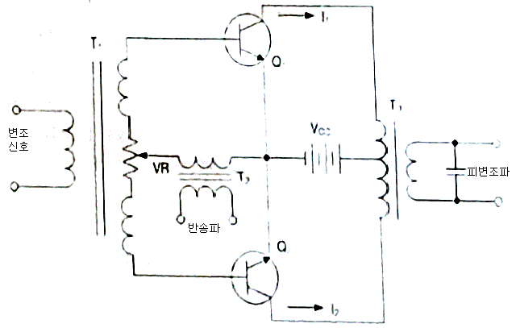
- 베이스 변조회로
- 에미터 변조회로
- 트랜지스터 평형 변조회로
- 컬렉터 변조회로
(정답률: 73%)
12. 다음 중 주파수 변조에서 S/N비를 높이기 위한 방법이 아닌 것은?
- 주파수 대역폭을 크게 한다.
- 변조지수를 크게 한다.
- 프리엠퍼시스 회로를 사용한다.
- 주파수 변별회로를 사용한다.
(정답률: 42%)
13. 진폭변조에서 신호파의 진폭이 70, 반송파의 진폭이 100일 때의 변조도는 몇 [%]인가?
- 20[%]
- 30[%]
- 70[%]
- 100[%]
(정답률: 75%)
14. 다음 중 아날로그 신호를 디지털 신호로 변환할 때 양자화 잡음의 경감 대책이 아닌 것은?
- 압신기를 사용한다.
- 양자화 스텝수를 감소시킨다.
- 양자화 비트수를 증가시킨다.
- 비선형화 한다.
(정답률: 71%)
15. 펄스파에서 낮은 주파수 성분이나 직류분이 잘 통하지 않기 때문에 생기는 것으로 펄스 하강 부분이 낮아진 크기를 무엇이라 하는가?
- 세그(Sag)
- 링킹(Ringing)
- 언더슈트(Undershoot)
- 오버슈트(Overshoot)
(정답률: 61%)
16. 다음 회로의 입력에 정현파를 가했을 때 출력 파형은?
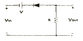
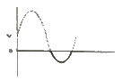
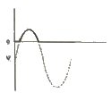
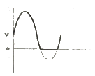
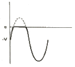
(정답률: 53%)
17. 다음 회로에서 A, B, C를 입력, X를 출력이라고 하면 회로는 어떤 논리 게이트인가? (단, 정논리 회로이다.)
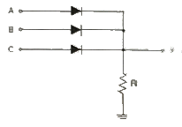
- NAND 게이트
- OR 게이트
- AND 게이트
- NOR 게이트
(정답률: 67%)
18. 입력 주파수 512[kHz]를 T형 플립플롭 7개 종속 접속한 회로에 인가했을 때 출력 주파수는 얼마인가?
- 256[kHz]
- 8[kHz]
- 4[kHz]
- 2[kHz]
(정답률: 63%)
19. 비동기식 5진 카운터(Counter) 회로는 최소 몇 개의 플립플롭(Flip-Flop)이 필요한가?
- 4
- 3
- 2
- 1
(정답률: 75%)
20. 조합 논리 회로 중 0과 1의 조합으로 부호화를 행하는 회로로 2n개의 입력선과 n개의 출력 선으로 구성된 것은?
- 디코더(Decoder)
- DEMUX
- MUX
- 인코더(Encoder)
(정답률: 73%)
2과목: 정보통신 시스템
21. 다음 중 국가에서 2020년 구축완료를 목표로 추진하고 있는 국가재난 안전통신망의 용어는?
- PS-LTE
- Wibro
- LTE-R
- DOC
(정답률: 78%)
22. 회선교환 방식의 특징이 아닌 것은?
- 연결 설정 단계에서 자원 할당이 필요하다.
- 데이터 통신을 위해 연결 설정, 데이터 전송, 연결 해제의 세 단계가 필요하다.
- 회선교환 방식은 데이터그램 방식에 비해 네트워크 효율성이 좋다.
- 주로 전화망에서 사용하는 교환 방식이다.
(정답률: 68%)
23. 다음 중 통신 프로토콜의 기능과 관계가 없는 것은?
- 오류 제어
- 흐름 제어
- 전송 제어
- 연결 제어
(정답률: 46%)
24. OSI 참조모델에서 네트워크 상에서 동작하는 응용프로그램과 시스템운영 및 관리 프로그램, 단말기 동작과 관련된 프로그램 운영 기능을 제공하는 요소는?
- 전송미디어
- 응용개체
- 연결
- 개방형 시스템
(정답률: 70%)
25. OSI 7계층에서 응용 사이의 연결을 설정·관리·해제하는 통신제어 구조를 제공하는 계층은?
- 물리계층
- 표현계층
- 전송계층
- 세션계층
(정답률: 59%)
26. 미국 국립표준협회로서 미국의 표준 제정은 물론 ISO등 국제 표준화 활동에서 미국을 대표하는 기관은?
- DIN
- BSI
- ANSI
- EIA
(정답률: 75%)
27. 전화통신망(PSTN)에서 최번 시 1시간에 발생한 호(Call) 수가 120 이고, 평균통화시간이 3분일 때 이 회선의 호량(Erlang)은?
- 0.1[Erl]
- 6[Erl]
- 40[Erl]
- 360[Erl]
(정답률: 79%)
28. 다음 중 LAN에서 베이스밴드 전송의 특징이 아닌 것은?
- 가격이 저렴하다.
- 아날로그신호 전송 및 원거리 전송이 가능하다.
- 단순하여 설치와 유지가 쉽다.
- 전파지연이 짧다.
(정답률: 73%)
29. 근거리통신망(LAN)에서 사용되는 이더넷 프레임(Ethernet Frame)의 목적지 주소크기와 출발지 주소크기의 합은 얼마인가?
- 6[bits]
- 12[bits]
- 64[bits]
- 96[bits]
(정답률: 61%)
30. 다음은 신호변환 방식에 따른 변조 방식을 분류한 것이다. 바르게 나열한 것은?
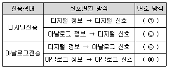
- ㉠ 베이스밴드, ㉡ 펄스 부호 변조(PCM), ㉢ 브로드밴드 대역 전송, ㉣ 아날로그 변조
- ㉠ 브로드밴드 대역 전송, ㉡ 펄스 부호 변조(PCM), ㉢ 아날로그 변조, ㉣ 베이스밴드
- ㉠ 베이스밴드, ㉡ 펄스 부호 변조(PCM), ㉢ 아날로그 변조, ㉣ 브로드밴드 대역 전송
- ㉠ 펄스 부호 변조(PCM), ㉡ 베이스밴드, ㉢ 브로드밴드 대역 전송, ㉣ 아날로그 변조
(정답률: 63%)
31. 이동통신 기지국의 섹터간 전파가 겹치는 지역에서 통화전환이 이루어질 때의 핸드오프를 무엇이라고 하는가?
- 하드 핸드오프(Hard Handoff)
- 소프트 핸드오프(Soft Handoff)
- 소프터 핸드오프(Softer Handoff)
- 미들 핸드오프(Middle Handoff)
(정답률: 61%)
32. 정지위성은 이론상 지구를 중심으로 몇 개를 설치하면 일부 극지방을 제외하고 모든 지역에서 위성통신이 가능한가?
- 3
- 5
- 6
- 10
(정답률: 73%)
33. RFID 리더(Reader)는 크게 제어(Control)부와 아날로그/RF 부로 나눌 수 있다. 아날로그/RF부의 기능이 아닌 것은?
- 태그를 활성화하고 전력을 공급하기 위한 고주파전력 생성
- 태그로 전송할 데이터의 변조
- 태그와 통신
- 태그의 수신신호를 복조
(정답률: 66%)
34. 다음 중 괄호 안에 들어갈 내용으로 적합한 것은?
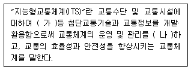
- (가) 무선 및 유선통신, (나) 과학화, 자동화
- (가) 전자ㆍ제어 및 통신, (나) 과학화, 자동화
- (가) 전자ㆍ제어 및 통신, (나) 지능화, 자동화
- (가) 무선 및 유선통신, (나) 지능화, 자동화
(정답률: 66%)
35. 다음 중 정보통신 시스템 설계의 진행과정에서 가장 나중에 수행해야 하는 것은?
- 실시설계
- 조사분석
- 기본설계
- 계획설계
(정답률: 74%)
36. 정보통신시스템의 개발 과정 단계 중 소프트웨어 프로그래밍, 하드웨어 구입, 시스템 설치 등이 포함되는 단계는?
- 시스템 설계 단계
- 시스템 구현 단계
- 시스템 시험 단계
- 시스템 유지보수 단계
(정답률: 75%)
37. 정보통신보안의 요건 중 다음 내용에 해당하는 것은?
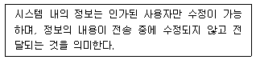
- 무결성
- 기밀성
- 가용성
- 인증
(정답률: 79%)
38. 정보통신시스템에서 신뢰성의 척도로 가동률을 사용하고 있다. MTBF = 22시간, MTTR = 2시간일 때 가동률은 얼마인가?(단, 소수점 3번째 자리에서 반올림한다.)
- 0.98
- 0.96
- 0.94
- 0.92
(정답률: 72%)
39. A가 B에게 암호화 메시지를 보내는 경우 공개키 암호화 단순모델의 동작절차로 적합하게 나열한 것은?
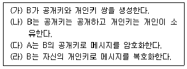
- (가) - (나) - (다) - (라)
- (가) - (다) - (라) - (나)
- (나) - (가) - (다) - (라)
- (나) - (다) - (가) - (라)
(정답률: 80%)
40. 대칭키 암호화 방식을 사용하여 4명이 통신을 한다고 할 때, 4명이 서로 간 비밀통신을 하기 위해 필요한 비밀키의 수는?
- 4
- 6
- 8
- 10
(정답률: 74%)
3과목: 정보통신 기기
41. 컴퓨터의 중앙처리장치 구성 요소가 아닌 것은?
- 내부기억장치
- 연산장차
- 제어장치
- 출력장치
(정답률: 76%)
42. 통신제어장치(CCU)의 종류 중 아래의 설명에 해당하는 것은?
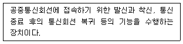
- 전처리 장치(FEP)
- 후처리 장치(BEP)
- 원격처리 장치(RP)
- 네트워크 제어장치(NCU)
(정답률: 67%)
43. 터미널과 데이터 전송회선을 연결해 주는 부분으로 터미널 내부의 전기적 신호레벨과의 상호변환 역할은 어느 부분에서 담당하는가?
- 회선 접속부
- 회선 제어부
- 입출력 제어부
- 신호제어부
(정답률: 55%)
44. 다음 그림이 나타내는 전송부호 형식은?
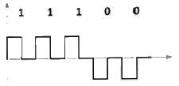
- Unipolar NRZ
- Polar NRZ
- Unipolar RZ
- Polar RZ
(정답률: 59%)
45. 다음 중 XDSL에 대한 설명으로 잘못된 것은?
- 음성신호와 데이터 신호를 동시 전송하기 위해 송·수신 속도를 같게 한다.
- 전화국과의 거리가 가까울수록 속도를 빠르게 할 수 있다.
- ADSL, HDSL, SDSL, VDSL 등이 있다.
- 기존의 전화회선을 이용하면서 주파수 대역폭이 넓은 범위를 사용하는 방식이다.
(정답률: 65%)
46. 다음 중 영상통신기기의 압축에 대한 평가 기준으로 맞지 않는 것은?
- 압축률
- 암호화율
- 복원된 데이터의 품질
- 압축/복원 속도
(정답률: 76%)
47. 글자나 그림 등의 원고를 일정한 규칙에 따라 화소로 분해 및 조립하는 것을 무엇이라 하는가?
- 주사
- 광전변환
- 동기
- 기록변환
(정답률: 69%)
48. 화상회의의 오디오 압축방식으로 300~3,400[Hz]의 대역폭을 가진 채널 상에서 16, 24, 32, 40[kbps] ADPCM을 지원하는 표준은?
- G.721
- G.722
- G.724
- G.726
(정답률: 56%)
49. 다음 중 멀티미디어 화상회의 데이터를 TCP/IP와 같은 패킷망을 통해 전송하기 위한 ITU-T의 표준은?
- H.221
- H.231
- H.320
- H.323
(정답률: 67%)
50. 자유공간에서 송수신 안테나간 거리 2[km]에 10[GHz]의 주파수로 통신링크를 구성하고자 한다. 이에 대한 전송경로의 손실은 약 얼마인가?
- 106.52[dB]
- 112.52[dB]
- 118.52[dB]
- 124.52[dB]
(정답률: 63%)
51. 등방성 안테나로부터 거리가 2,000[m] 떨어져 있는 점의 전계강도는 약 얼마인가? (단, 안테나로부터 방사되는 전력은 10[W]이다.)
- 8.66[mV/m]
- 0.866[mV/m]
- 1.866[mV/m]
- 0.186[mV/m]
(정답률: 54%)
52. 지구국으로부터 통신위성까지의 거리가 36,000[km]일 때, 이 지구국에서 발사된 전파가 통신위성을 경유하여 지구국에 도착할 때까지 걸리는 이론적 시간은 얼마인가? (단, 지구국과 통신위성 장치에서 소요되는 시간은 고려하지 않음)?
- 240[ms]
- 245[ms]
- 250[ms]
- 255[ms]
(정답률: 67%)
53. 다음 중 CDMA(IS-95A방식기준)망에서 BTS(Base Transceiver Station)에서 수행하는 과정이 아닌 것은?
- 콘볼루션인코딩
- 심볼반복
- 블록인터리빙
- CRC
(정답률: 72%)
54. 다음 중 이동통신기기에 사용하는 PN(Pseudo Noise) 코드 설명으로 틀린 것은?
- PN코드는 균형성을 가진 의사잡음이다.
- 형태가 무작위인 것 같지만 실제로는 규칙성을 갖는다.
- PN코드는 런특성을 가지고 있다.
- PN코드는 초기동기를 잡는데는 사용되지 않는다.
(정답률: 69%)
55. 멀티미디어 활용분야 중 기존 공중망 방송이나 케이블TV에서 프로그램을 일방적으로 수신하는 것이 아니라 가입자의 요구에 따라 원하는 시간에 원하는 내용을 이용할 수 있는 맞춤 영상 서비스는?
- VCS(Video Conference System)
- VOD(Video on Demand)
- VDT(Video DialTone)
- VR(Virtual Reality)
(정답률: 80%)
56. 지상파 DMB 기기의 8번 채널의 주파수 사용대역폭은?
- 4[MHz]
- 5[MHz]
- 6[MHz]
- 7[MHz]
(정답률: 68%)
57. 다음 멀티미디어기기 중 비디오텍스의 특성으로 틀린 것은?
- 대용량의 축적 정보를 제공한다.
- 쌍방향 통신 기능을 갖는 검색·회화형 화상 정보 서비스이다.
- 정보 제공자와 운용 주체가 같다.
- 시간적인 제한은 없으나 화면의 전송이 느리고 Interface가 필요하다.
(정답률: 48%)
58. 다음 중 DSU(Digital Service Unit)의 특징으로 틀린 것은?
- 디지털 정보를 디지털 신호로 변환한다.
- 디지털 정보를 장거리 전송하기 위해 사용한다.
- 양극성 신호를 단극성 신호로 변환하여 전송한다.
- 디지털 네트워크에서 사용하는 회선종단장치이다.
(정답률: 55%)
59. 다음 중 AR, VR, MR에 대한 설명이 틀린 것은?
- MR은 현실세계와 가상세계 정보를 결합해 두 세계를 융합시키는 공간을 만들어내는 기술
- AR은 현실과 가상환경을 융합하는 복합형 가상 현실 기술
- VR은 컴퓨터를 통해 가상현실을 체험하게 해주는 기술
- MR은 가상세계와 현실정보를 결합한 기술
(정답률: 65%)
60. 다음 중 멀티미디어에 대한 설명으로 적합하지 않는 것은?
- 두 가지 이상의 정보를 동시표현이 가능하다.
- 데이터의 압축 및 복원을 이용한다.
- 시스템전송에서 동기화에 필요한 전용선을 반드시 갖추어야 한다.
- 대용량 저장장치 및 미디어 입출력 장치를 갖추어야 한다.
(정답률: 67%)
4과목: 정보전송 공학
61. 다음 양자화 방식 중 스텝 간격에 따른 분류가 아닌 것은?
- 선형 양자화
- 비선형 양자화
- 적응형 양자화
- 비예측 양자화
(정답률: 64%)
62. 다음 중 QAM 변조방식의 특징으로 틀린 것은?
- ASK와 QPSK을 합친 변조방식이다.
- 서로 직교하는 2개의 반송파를 사용한다.
- 반송파의 진폭과 위상을 동시에 변조한다.
- 1채널과 Q채널을 상호의존적으로 사용한다.
(정답률: 54%)
63. 다음 중 시분할 다중화(TDM) 방식의 특징으로 틀린 것은?(오류 신고가 접수된 문제입니다. 반드시 정답과 해설을 확인하시기 바랍니다.)
- 주파수 대역폭을 작은 대역폭으로 나누어 사용한다.
- 동기 및 비동기식 데이터 다중화에 사용한다.
- 비트 삽입식과 문자 삽입식이 있다.
- 멀티포인트 시스템에 적합하다.
(정답률: 61%)
64. 다음 중 파장분할 다중전송 시스템의 구성 요소에 속하지 않는 것은?
- 수광소자
- 광분파기
- 발광소자
- 광반사기
(정답률: 60%)
65. 다음 중 코히어런트 광전송 방식에 대한 설명으로 틀린 것은?
- 반송파를 사용하여 광파의 주파수나 위상에 정보를 실어 전송한다.
- 국부발진 광파와 캐리어 광파의 주파수가 틀리면 호모다인 광파다.
- 광의 강약에 의해 신호를 전송하지 않는다.
- 완전한 코히어런트 광이란 단일 파장의 광 즉, 단색광(Monochromatic Light)을 의미한다.
(정답률: 62%)
66. 다음 중 다중모드 광섬유(Multimode Fiber)에 대한 설명으로 알맞지 않은 것은?
- 코어내를 전파하는 모드가 여러 개 존재한다.
- 모드간 간섭이 있어 전송대역이 제한된다.
- 고속, 대용량 장거리 전송에 사용된다.
- 단일모드 광섬유보다 제조 및 접속이 용이하다.
(정답률: 54%)
67. 다음 중 광섬유의 특징에 대한 설명으로 알맞지 않는 것은?
- 아주 빠른 전송속도를 가지고 있다.
- 정보 손실률이 높다.
- 매우 낮은 전송 에러율을 가지고 있다.
- 네트워크 보안성이 높다.
(정답률: 73%)
68. 다음 중 소프트와이어(Softwire)를 통한 전송 방법으로 알맞은 것은?
- 동축 케이블
- 광섬유 케이블
- 지상 마이크로파 통신
- 트위스트 페어 케이블
(정답률: 48%)
69. 다음 중 전자파(전파)에 대한 설명으로 틀린 것은?
- 전자파를 파장이 짧은 것부터 순서대로 나열하면 y선, x선, 적외선 등이 있다.
- 전자파는 파장이 짧을수록 직진성 및 지향성이 강하다.
- 전자파는 진공 또는 물질 속을 전자장의 진동이 전파함으로써 전자 에너지를 운반하는 것이다.
- 전파는 인공적인 유도에 의해 공간에 퍼져나가는 파이다.
(정답률: 70%)
70. 다음 중 비동기식 전송 방식의 특징으로 틀린 것은?
- 스타드 비트와 스탑 비트를 사용한다.
- 문자와 문자사이에는 휴지간격이 없다.
- 정보전송형태는 문자 단위로 이루어진다.
- 2,000[bps]이하의 전송속도에서 사용한다.
(정답률: 73%)
71. 다음 중 동선(구리선)을 사용하는 전송로 구간에서 사용하는 통화로 신호방식은?
- 직류방식
- 교류 방식
- In-Band 방식
- Out-of-Band 방식
(정답률: 64%)
72. No.7 지능망의 프로토콜 중 신호연결제어부(SCCP : Signaling Connection Control Part)에 대한 설명으로 틀린 것은?
- MTP(Message Transfer Part)와 합쳐져서 망서비스부(NSP : Network Service Part)라고 불려지고, MTP의 주소 기능을 보강하여 준다.
- 네트워크계층에서 연결성 서비스와 비연결성 서비스를 4종류의 프로토콜에 의하여 제공하고 있다.
- SCCP는 네트워크와 네트워크 사이에 신호 패킷의 전송을 가능하게 하고, 가상회로 망에서 패킷의 전송도 지원한다.
- 인접한 신호점(Signaling Point) 간에 신호 메시지의 안정된 전송을 위해 흐름제어, 에러제어, 에러감시 등의 기능을 수행한다.
(정답률: 38%)
73. 다음 중 Broadband 전송 방식이 아닌 것은?
- ASK
- FSK
- QAM
- PCM
(정답률: 73%)
74. 네트워킹 주소지정 방식 중 특정 기준을 만족하는 스테이션그룹으로 전송하기 위한 방식은?
- 유니캐스트
- 멀티캐스트
- 애니캐스트
- 브로드캐스트
(정답률: 50%)
75. 다음 중 패킷 스위칭에 대한 설명으로 틀린 것은?
- 데이터 전송을 위한 특정 경로가 존재한다.
- 패킷은 전송 도중에 결합되거나 분할될 수 있다.
- 데이터를 패킷이라는 작은 조각으로 나누어 전송한다.
- 일부 데이터가 유실되거나 순서가 뒤 바뀌어 수신될 수 있다.
(정답률: 46%)
76. 다음 표에서 주어진 IP주소의 클래스, 네트워크 부분, 호스트 부분이 맞게 짝지어진 것을 모두 선택한 것은?
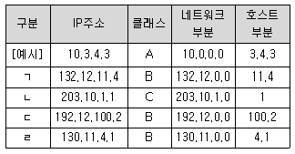
- ㄱ, ㄴ
- ㄱ, ㄷ
- ㄱ, ㄴ, ㄹ
- ㄱ, ㄷ, ㄹ
(정답률: 66%)
77. 다음 중 VLSM을 지원하는 내부 라우팅 프로토콜이 아닌 것은?
- RIP v1
- EIGRP
- OSPF
- Integrated IS-IS
(정답률: 53%)
78. 데이터 링크 계층의 기능에 관한 내용으로 틀린 것은?
- 인점노드간의 흐름제어와 에러제어 기능을 수행한다.
- 매체공유를 위한 매체접근제어(MAC)를 수행한다.
- 발신지에서 목적지까지 최적의 패킷 전송경로를 설정한다.
- 프레임을 노드에서 노드로 전달한다.
(정답률: 59%)
79. 다음 보기에서 빈칸의 OSI 7계층 순서가 맞는 것은?
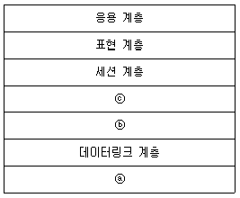
- ⓐ 네트워크 계층, ⓑ 물리계층, ⓒ 전송 계층
- ⓐ 물리 계층, ⓑ 네트워크 계층, ⓒ 전송 계층
- ⓐ 물리 계층, ⓑ 전송 계층, ⓒ 네트워크 계층
- ⓐ 네트워크 계층, ⓑ 전송 계층, ⓒ 물리 계층
(정답률: 78%)
80. 다음 중 HDLC 링크 제어 프로토콜의 전달 모드가 아닌 것은?
- 정상 응답 모드
- 동기 응답 모드
- 비동기 균형 모드
- 비동기 응답 모드
(정답률: 39%)
5과목: 전자계산기일반 및 정보통신설비기준
81. 다음 중 입출력 프로세서(I/O Processor)의 기능으로 틀린 것은?
- 컴퓨터 내부에 설치된 입출력 시스템은 중앙처리장치의 제어에 의하여 동작이 수행된다.
- 중앙처리장치의 입출력에 대한 접속 업무를 대신 전달하는 장치이다.
- 중앙처리장치와 인터페이스 사이에 전용 입출력 프로세서(IOP;I/O Processor)를 설치하여 많은 입출력장치를 관리한다.
- 중앙처리장치와 버스(Bus)를 통하여 접속되므로 속도가 매우 느리다.
(정답률: 70%)
82. 입력장치에서 대량의 데이터를 전송하기 위해, 중앙처리장치(CPU)가 직접 기억장치 액세스(DMA, Direct Memory Access) 장치에 전달하는 정보로 틀린 것은?
- 전송할 워드(Word) 수
- 입력장치의 주소
- 작동할 연산(Operation) 수
- 데이터를 저장할 주기억장치의 시작 주소
(정답률: 49%)
83. 중앙 연산 처리 장치에서 마이크로 동작(Micro-Operation)이 순서적으로 일어나게 하려면 무엇이 필요한가?
- 스위치(Switch)
- 레지스터(Register)
- 누산기(Accumulator)
- 제어신호(Control Signal)
(정답률: 50%)
84. 10진수 56789에 대한 BCD코드(Binary Coded Decimal)는 어느 것인가?
- 0101 0110 0111 1000 1001
- 0011 0110 0111 1000 1001
- 0111 0110 0111 1000 1001
- 1001 0110 0111 1000 1001
(정답률: 72%)
85. 다음 중 제일 먼저 삽입된 데이터가 제일 먼저 출력되는 파일구조는?
- 스텍(Stack)
- 큐(Queue)
- 리스트(List)
- 트리(Tree)
(정답률: 70%)
86. 다음 보기의 기억장치 중 속도가 가장 빠른 것에서 느린 순서대로 나열한 것으로 맞는 것은?
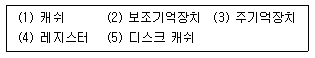
- (4) - (3) - (1) - (5) - (2)
- (4) - (5) - (3) - (1) - (2)
- (4) - (1) - (3) - (5) - (2)
- (4) - (5) - (1) - (3) - (2)
(정답률: 69%)
87. 다음 중 분산 처리 시스템에 대한 설명으로 틀린 것은?
- 사용자들이 여러 지역의 자원과 정보를 마치 자신의 시스템 내부 자원처럼 편리하게 사용한다.
- 지역적으로 분산된 여러 대의 컴퓨터가 프로세서 사이의 특별한 데이터 링크를 통하여 교신하면서 동일한 업무를 수행한다.
- 접속된 모든 단말 장치에 CPU의 사용시간을 일정한 간격으로 차례로 할당한다.
- 자원의 공유, 신뢰성 향상, 계산속도 증가 등의 특징을 가진다.
(정답률: 58%)
88. 다음 중 프로그램의 종류에 대한 설명으로 틀린 것은?
- 베타버전이란 개발자가 상용화하기 전에 테스트용으로 배포하는 것을 말한다.
- 쉐어웨어란 기간이나 기능 제한 없이 무료로 사용하는 것을 말한다.
- 데모버전이란 기간이나 기능의 제한을 두고 무료로 사용하는 것을 말한다.
- 테스트버전이란 데모버전이전에 오류를 찾기 위해 배포하는 것을 말한다.
(정답률: 70%)
89. 다음 중 JAVA 언어의 특징이 아닌 것은?
- 범용 프로그램
- 비독립적 플랫폼
- 분산자원에 접근 용이
- 객체 지향적 언어
(정답률: 68%)
90. 다음 중 프로그램 카운터와 명령의 번지부분을 더해 유효번지로 결정하는 주소 지정 방식은?
- 즉각 주소 지정 방식(Immediate Addressing Mode)
- 간접 주소 지정 방식(Indirect Addressing Mode)
- 직접 주소 지정 방식(Direct Addressing Mode)
- 상대 주소 지정 방식(Relative Addressing Mode)
(정답률: 44%)
91. 전기공작물 또는 전철시설 등이 그 주위에 있는 방송통신설비에 정전유도나 전자유도 등으로 인한 전압이 발생되도록 하는 현상을 무엇이라 하는가?
- 전기유도
- 전압유도
- 저가유도
- 전력유도
(정답률: 46%)
92. 다음 중 일반적인 통신관련시설의 접지저항 허용 기준은 얼마인가?
- 10[Ω] 이하
- 20[Ω] 이하
- 25[Ω] 이하
- 30[Ω] 이하
(정답률: 71%)
93. 관로가 보도 및 자전거도로에 매설 될 때 지면에서 관로 상단까지의 거리 기준은?
- 0.5[m] 이상
- 0.6[m] 이상
- 1.0[m] 이상
- 1.5[m] 이상
(정답률: 54%)
94. 영상정보처리기기 운영자가 개인영상정보를 제3자에게 제공할 수 있는 경우가 아닌 것은?
- 정보주체에게 동의를 얻은 경우
- 범죄의 수사와 공소의 제기 및 유지를 위하여 필요한 경우
- 개인정보처리자의 동의를 얻은 경우
- 통계작성 및 학술연구 등의 목적을 위하여 필요한 경우로서 특정 개인을 알아볼 수 없는 형태로 개인영상정보를 제공하는 경우
(정답률: 62%)
95. 다음 중 정보통신망과 관련된 기술 및 기기의 개발을 효율적으로 추진 하기 위하여 관련 연구기관이 할 수 있는 것이 아닌 것은?
- 연구개발
- 기술협력
- 기술이전
- 기술판매
(정답률: 76%)
96. 다음 문장의 괄호 안에 들어갈 내용으로 틀린 것은?
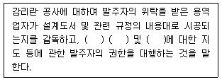
- 품질관리
- 시공관리
- 사후관리
- 안전관리
(정답률: 68%)
97. 다음 중 사용 전 검사의 대상공사가 아닌 것은?
- 구내통신선로공사
- 구내전송선로설비공사
- 이동통신구내선로공사
- 방송공동수선설비공사
(정답률: 44%)
98. 전기통신사업자가 제공하는 보편적 역무의 내용이 아닌 것은?
- 이동전화 서비스
- 유선전화 서비스
- 긴급통신용 전화 서비스
- 장애인·저소득층 등에 대한 요금감면 서비스
(정답률: 53%)
99. 정보통신공사업법에 따른 정보통신 관련 분야에 해당되지 않는 것은?
- 정보통신
- 정보관리
- 정보처리
- 산업계측제어
(정답률: 48%)
100. 공사 발주자가 감리원에 대해 취할 수 있는 필요한 조치에 해당하는 것은?
- 시정지시
- 감리원의 업무정지
- 감리원의 감봉조치
- 감리원의 철수요구
(정답률: 69%)